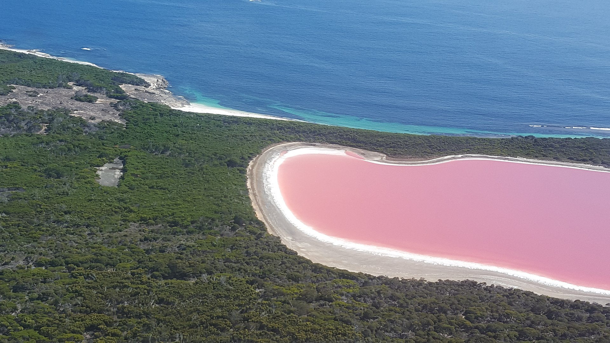
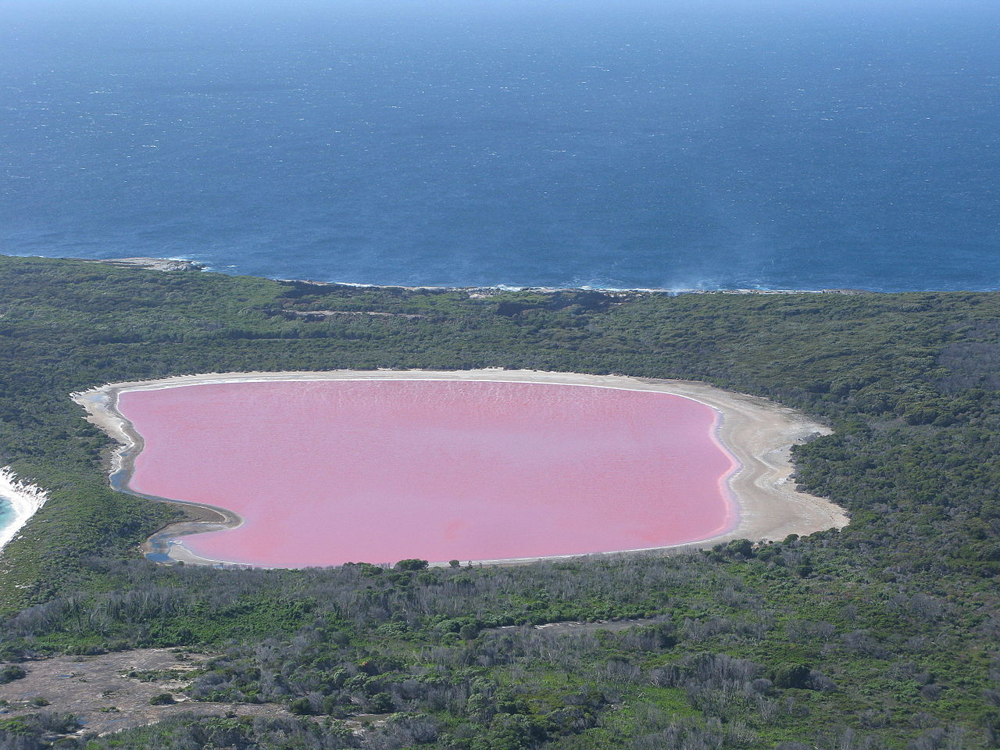
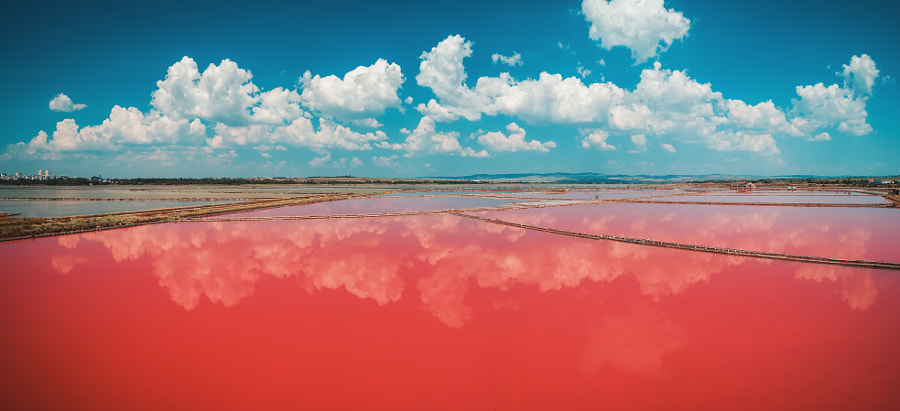
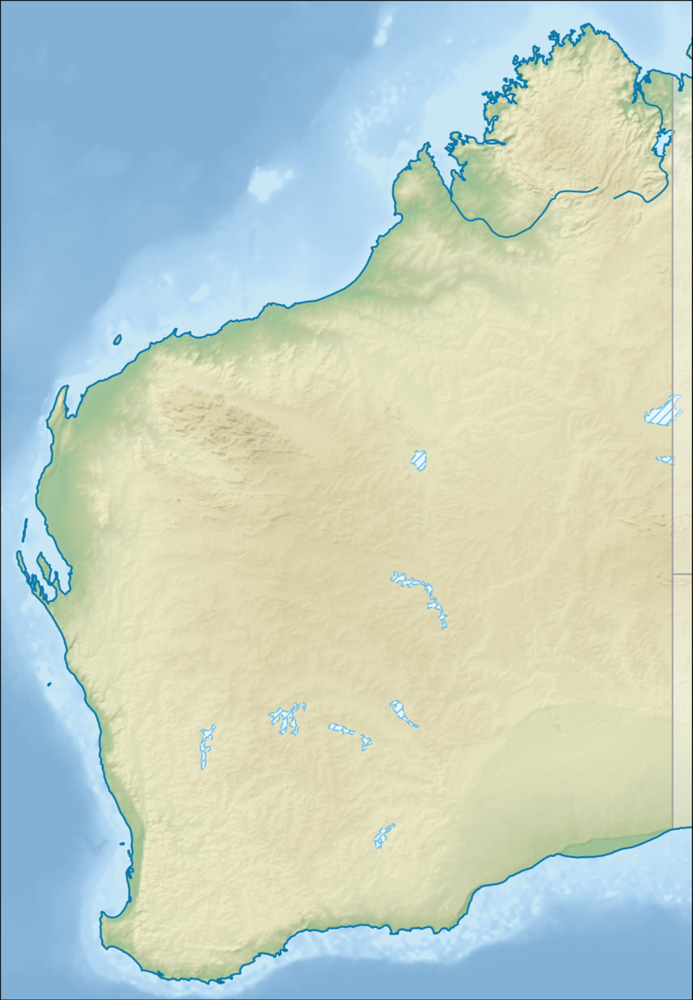

Lake Hillier
Goldfields-Esperance, Western Australia


Lake Hillier is about 600 metres (2,000 ft) in length by about 250 m (820 ft) in width.The lake is surrounded by a rim of sand and a dense woodland of paperbark and eucalyptus trees with a narrow strip of sand dunes covered by vegetation separating its northern edge from the northern coast of Middle Island. The most notable feature of the lake is its pink, vibrant colour. The vibrant colour is permanent, and does not alter when the water is taken in a container. The pink colour is considered to be due to the presence of the organism Dunaliella salina.

The Extreme Microbiome Project, part of the Association of Biomolecular Resource Facilities (ABRF), Metagenomics Research Group (MGRG), has performed a metagenomic analysis on the lake to find Dunaliella as well as Salinibacter ruber, Dechloromonas aromatica, and a few species of the Archaea. Air is the best mode of transportation for viewing the lake. At one point in its history the lake was used to collect salt.

History
European discovery and use
Lake Hillier was visited by the Matthew Flinders' expedition on 15 January 1802. Flinders' journal entries are considered to be the first written records of the lake. Flinders observed the pink lake after ascending the island's highest peak (now called Flinders Peak), describing the lake as follows:
In the north-eastern part was a small lake of a rose colour, the water of which, as I was informed by Mr. Thistle who visited it, was so saturated with salt that sufficient quantities were crystallised near the shores to load a ship. The specimen he brought on board was of a good quality, and required no other process than drying to be fit for use.
Flinders visited Middle Island again in May 1803; he intended "to stop a day or two in Goose-Island Bay, for the purposes of procuring geese for our sick people, seal oil for our lamps, and a few casks of salt from the lake on Middle Island". It is reported that Flinders subsequently named the lake after William Hillier, a crew member of Investigator who died of dysentery on 20 May 1803 prior to the expedition's departure from Middle Island.
In 1889, Edward Andrews investigated the commercial possibilities of producing salt from Lake Hillier, and briefly moved onto the island with both of his sons.[10] They left after working the salt deposits for about one year.
The lake was subject to salt mining during the late 19th century. The salt mining enterprise is reported as failing for a number of reasons including "the toxicity of the salt collected for consumption".